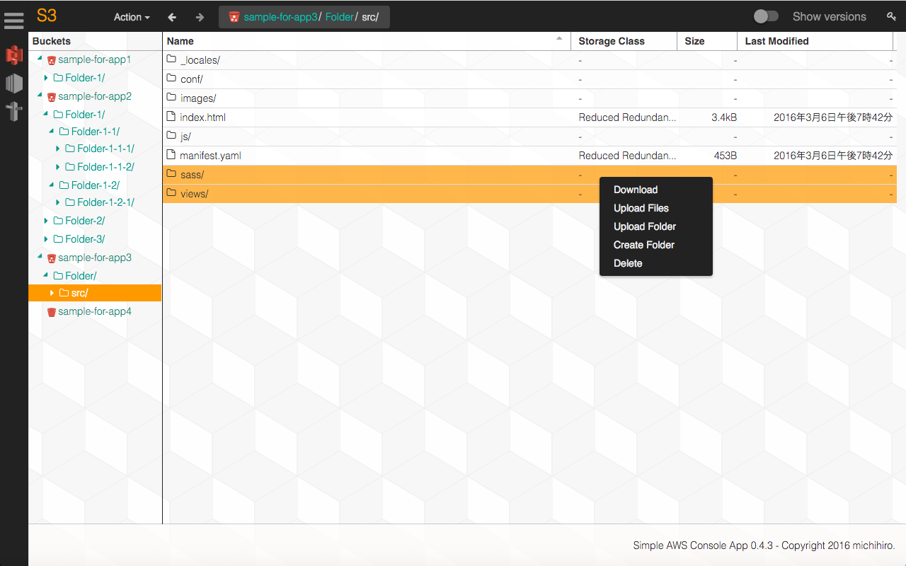

Simple AWS Console App is a Chrome App that has be aimed at making it easy to operate Amazon Web Services.
(for Windows, Mac OS X, etc)

What is Simple AWS Console App?
Open-Source
AWS Console App is a free.(Costs Separately for AWS.)
All you have to do is install Google Chrome on your computer(Mac,Windows).Then download AWS Console App from Chrome WebStore and enjoy this application.
you can check out the code on Github.
Quick-access
Call AWS Service API directly from AWS Console App without relay server,therefore lightweight.
To use AWS Console App,you need aws access key.The key is encrypted and stored on your computer.
How to install
- AWS Console App runs on Windows, Mac OS X.(Linux and Chrome OS are inadequately tested.)
- AWS Account ,access key ,privete key are required to use this application.
- Google Chrome is necessary when you install AWS Console App. Please access the following link. Click [ADD TO CHROME] button, and then it will start downloading.
Download